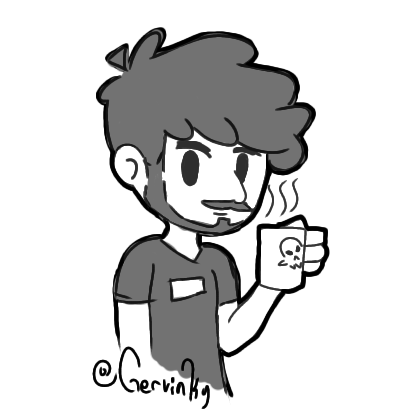

Sobre Mi

Soy Irving Gerardo Maldonado Guzmán tambien conocido como Gervinky o WizardSkull
tengo gran pasión por la programación, los videojuegos, el arte, etc.
Estudié Ing. Informática en la poderosisima UDG,
sin embargo me gusta aplicar la gran mayoría de mis conocimientos en las
distintas ramas ya sea bases de datos, desarrollo web, videojuegos, etc.
Habilidades
Soft Skills
- Liderazgo
- Trabajo en equipo
Technical Skills
- Unity
- Desarrollo web
- Bases de Datos SQL
- Flexibilidad en lenguajes de programación
Artistic Skills
- Diseño de sprites PixelArt
- Dibujo digital
- Edición de video
- Diseño gráfico para redes sociales